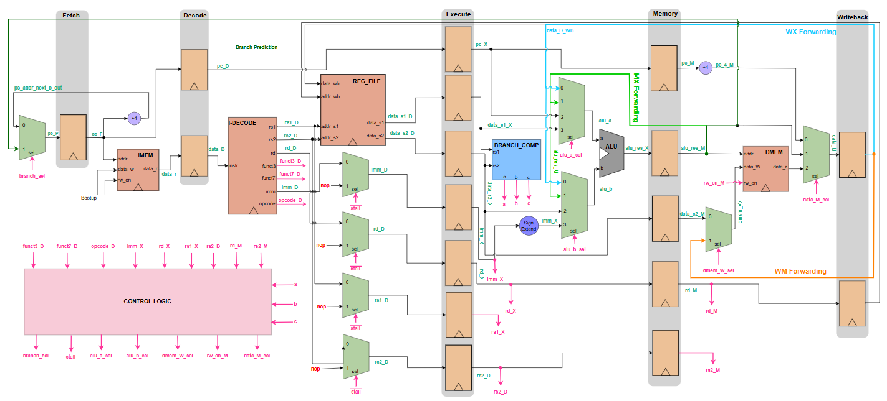

Digital Design & RTL
Computer Architecture, AI Hardware Acceleration, and FPGA Systems
RTL ARCHIVE
5-STAGE Pipelined RISC-V CPU (RV32I)

SystemVerilog
RV32I ISA
Verilator
GTKWave
Xilinx FPGA
- Architected a 5-stage scalar pipeline with custom decode logic; optimized RTL for BRAM mapping.
- Eliminated stalls via MX/WX/WM forwarding paths and implemented branch-taken prediction.
- Validated ISA compliance via deep-trace debugging of pipeline control and data flow.
IBERT TRANSFORMER AI ACCELERATOR


SystemVerilog
Systolic Arrays
AXI-Stream
Quantized AI
Fixed-Point Math
Vivado
- Implemented a parallelized systolic array architecture with custom PEs to optimize matrix multiplication for integer-only transformer inference.
- Developed hardware-optimized activation functions, including **GELU** and **Softmax**, using piecewise linear approximation and shift-based arithmetic.
- Orchestrated cycle-accurate data movement using **AXI-Stream interfaces**, FIFO buffers, and shift registers to maximize PE utilization.
- Achieved **100MHz timing closure** on a PYNQ-Z1 target by balancing arithmetic pipeline depth and DSP slice mapping.
DOMAIN SKILLSET
HDLs & Verification: SystemVerilog/Verilog, VC Formal, Verilator, Static Timing Analysis, Static Analysis, Linting
FPGA & ASIC Tools: Vivado, Quartus Prime, Innovus, Cadence Virtuoso, Verdi
Architecture: RISC-V, Systolic Arrays, PCIe Gen3/4, AXI4/APB